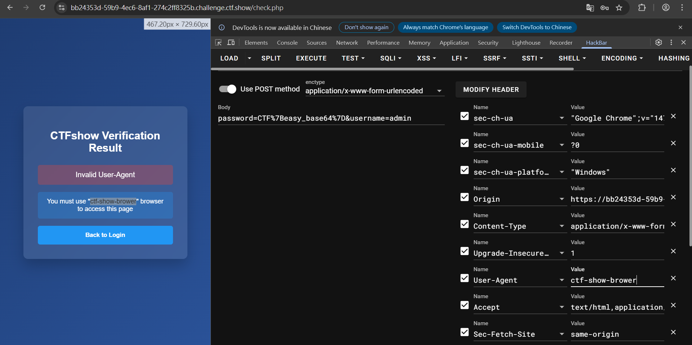
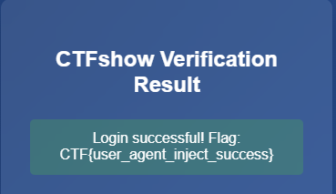

[Web] Http头注入
0x01 题目界面
可以看到是一个登录界面

0x02 查看源代码
有个javascript显示了他的密码检测逻辑
<script>
document.getElementById('loginForm').addEventListener('submit', function(e) {
e.preventDefault();
const correctPassword = "Q1RGe2Vhc3lfYmFzZTY0fQ==";
const enteredPassword = document.getElementById('password').value;
const messageElement = document.getElementById('message');
if (btoa(enteredPassword) === correctPassword) {
messageElement.textContent = "Login successful! Flag: "+enteredPassword;
messageElement.className = "message success";
} else {
messageElement.textContent = "Login failed! Incorrect password.";
messageElement.className = "message error";
}
});
</script>可以发现是base64
那就cyberchef解码一下

得到密码
CTF{easy_base64}贴到题目登录页
0x03 得到回显
Invalid User-Agent You must use "ctf-show-brower" browser to access this page
发现需要伪造你的user-agent也就是浏览器信息
改成
ctf-show-brower
那就开hackbar改request
把user-agent改成ctf-show-browser

0x04 获取 Flag
execute一波
看到回显有flag

得到flag
0x05 Flag
CTF{user_agent_inject_success}